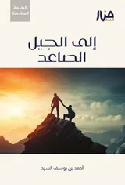
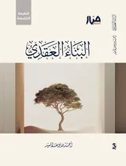
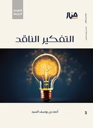

بالمعنى · قريبًا
بالنص

الجيل الصاعد


عرض الكل (4)
4
الكتب
إلى الجيل الصاعد
كتاب · 2020

البناء العقدي للجيل الصاعد
كتاب · 2020

التفكير الناقد للجيل الصاعد
كتاب · 2020

عرض الكل (7)
7
السلاسل
الجيل الصاعد و مشكلة التفاهة
سلسلة · 5 محاضرات
جلسات مع الجيل الصاعد
سلسلة · 7 محاضرات
جرعة وعي لشباب الجيل الصاعد
سلسلة · 3 محاضرات
عرض الكل على يوتيوب
19
المحاضرات
الجيل الصاعد والأحداث الكبرى | جلسات مع الجيل الصاعد 07
10 ديسمبر 2023 · يوتيوب
كيف يقتدي الجيل الصاعد بفتيان الصحابة؟
15 يوليو 2026 · يوتيوب
يا غلام إني أعلمك كلمات | جلسات مع الجيل الصاعد 03
9 نوفمبر 2025 · يوتيوب
تُرتَّب النتائج بالمطابقة في العنوان أولًا ثم في النص. تُفتح المحاضرات على يوتيوب، وبقية النتائج داخل الموقع.